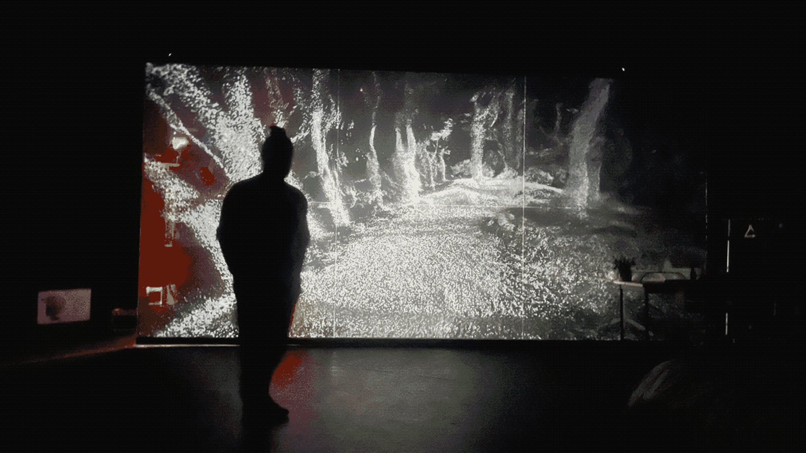

✳ hello
✳ world
Dwelling is a dynamic live performance and theatre installation created by Peter Power and Leon Butler. The performance explores the periphery of cultural isolation, and the dispersal of self across the multimedial, delving into themes of digital mortality, transformation, and rebirth.


The virtual world was created entirely within Unity. Data was captured from Robyn's movement through various methods, such as the Perception Neuron mo-cap suit, as well as emerging monocular 3d human pose detection models. Unity's particle system was used extensivley in the project, converting point cloud and positional data into emergent movement, and ethereal landscapes.
↯(2023)Beta Festival,Project Arts Center. Dublin, Ireland